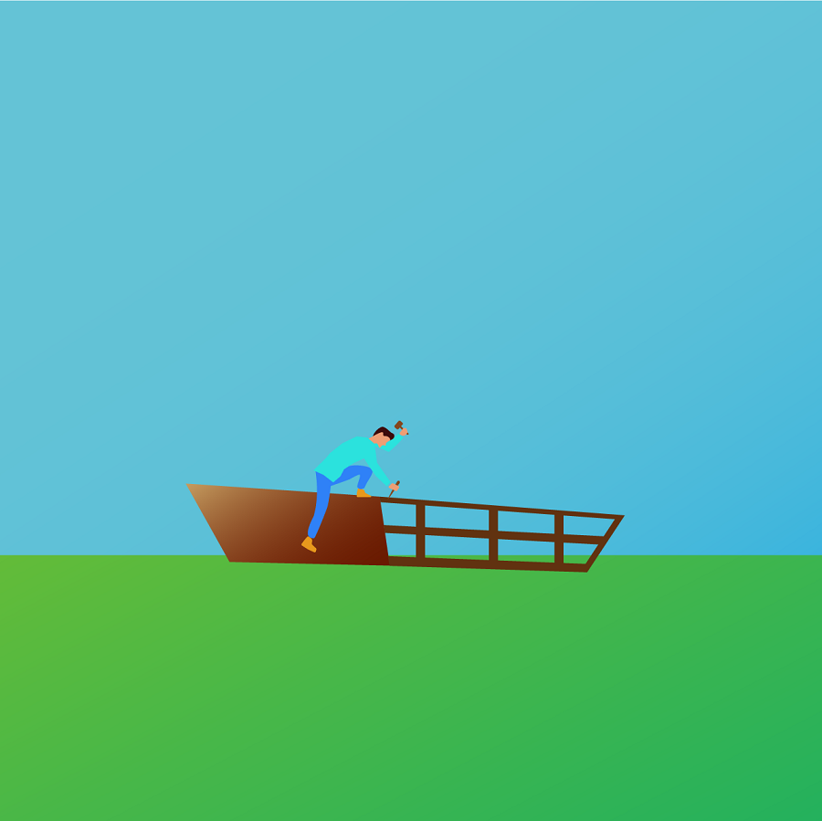
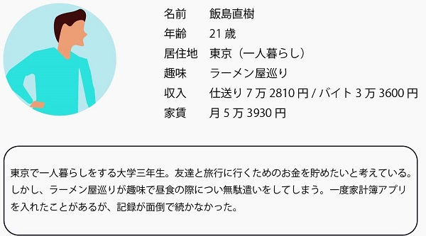
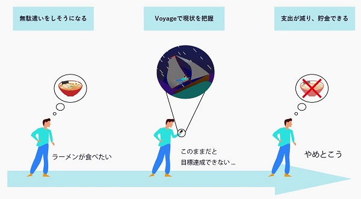
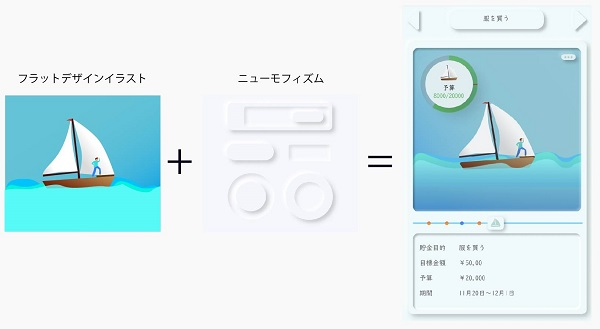

2. 楽しく記録し支出を減らす家計簿アプリ
作品概要

貯金と記録を楽しくする
貯金を促す家計簿アプリを制作するということで、貯金が楽しくなるような家計簿アプリとして制作しました。
テーマ：貯金をしたい人の為の家計簿アプリ ターゲット：貯金をしたいと考えている学生 仕様ツール：Adobeillustrator, Figma 制作期間：2週間

目標を決める
いつまでに、どれだけの予算を残すのか、などの目標を決めます。
貯金する
予算を使い切らないように目標に向かって貯金をします。


達成する
目標を達成。収支グラフなどで振り返りを行います。
制作工程
アンケート
家計簿アプリは記録が続かない
家計簿アプリを利用したことがある人を対象にアンケートを実施。利用者は記録のモチベーションが保てない。

競合調査
記録の手間を省く工夫をしているアプリが多い
記録を楽にする工夫がされていた

アイデア発散・収束
家計簿と支出に関するアイデア発散

コンセプト
目標可視化 ＋ ストーリー性
ただ目標を可視化するだけでなく、イラストを用いてストーリー性を付け足すことで見ていて楽しい記録したくなる家計簿アプリを実現
ペルソナ・ジャーニーマップ
無駄遣いをしてしまう大学生の支出を減らす


ラフ・ワイヤー
大量に作る
イラストはとにかく数を書き最適なのを探した。

UI
イラストはフラットデザインUIはニューモフィズム

色
航海をイメージしたカラーリング

結果とブラッシュアップ
落ちた
ニューモフィズムと合わせたら面白いのでは？
何度も何度も作り直した

| トップに戻る | 次の作品 |